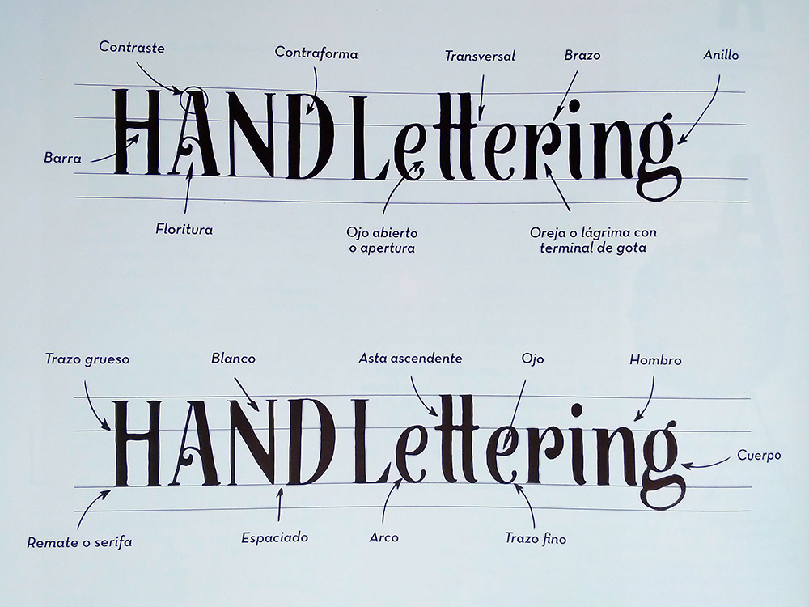

-La letra "o" tiene la misma altura que anchura.
-Las letras "m" y "w" son más anchas que altas.
-El ancho de la “v” es tres cuartas partes su altura.
-El ancho de la "e" es la mitad de su altura.
-La barra (brazo central) de la “e” debe ser más corta que sus brazos.
-La “b”, “e”, “f”, “j”, “l” suelen tener el doble de altura que de anchura.
Las letras dibujadas también reposan sobre cuatro líneas: línea de ascendentes, media (altura de x), de base y de descendentes. Las alturas de la línea media, de ascendentes y descendentes pueden variar en función del tipo de letra que se diseñe, por ejemplo: si se trata de una letra con mayor o menor altura, si se trata de letras deformadas o exageradas, etc.
Entre las cuatro líneas guía, se establece una proporción estándar (no matemática) con la cual puedes jugar y experimentar. Esta pauta ayuda a diseñar las letras, establecer relaciones entre ellas y ajustar tamaños. Puedes dibujar las líneas guía con regla, pero a medida que vayas practicando verás que para hacer lettering es más útil calcular visualmente las distancias y proporciones de una línea a otra que trazar las líneas con una regla.
Como ya sabes, la línea de ascendentes es el límite superior de letras con astas ascendentes. La línea media es el límite superior de las minúsculas pequeñas. Sobre la línea de base reposan todas las letras, y la línea de descendentes delimita las astas descendentes. Pero a la hora de dibujar letras se debe buscar un equilibrio óptico y no la precisión matemática. Existe una regla de "rebasamiento" de las letras respecto a las líneas guía, para que los tamaños de las letras sean visualmente iguales. Recordarás que las letras se basan en tres formas básicas: el círculo, el triángulo y el cuadrado. Según la norma, se debe realizar una compensación óptica: el círculo (letra curva) debe sobrepasar la línea de base y la línea media para que el ojo lo perciba del mismo tamaño y proporción que las formas cuadradas. Para que el triángulo (letra con punta) se vea igual de grande que las otras dos formas, debe rebasar la línea media hasta que tenga un aspecto visual adecuado.
Además, por regla general las letras mayúsculas son un poco más baja que las astas de las letras ascendentes. Por lo tanto, no llegan a tocar la línea de ascendentes. A partir de aquí, puedes jugar en cada diseño y probar diferentes proporciones para observar qué funciona mejor ópticamente.
Las letras son formas compuestas por una parte negra y otra blanca, ya que se debe considerar también el espacio en blanco que hay alrededor de la parte negra. Al leer, el ojo busca inconscientemente espacios que conectan y relacionan unas letras con otras con el fin de distinguirlos dentro de las letras de una misma palabra o en otras palabras de la frase.
Diseñar correctamente las proporciones entre las diferentes partes de la letra y distribuir bien el espacio no son cuestiones matemáticas sino visuales. Las características básicas de la letra son; la estructura, el cuerpo y el acabado. La estructura es la forma y proporción de la letra. El cuerpo es la forma central de la letra situada entre la línea media y la de base, y se compone del peso, el contraste y el eje. El acabado se basa en los remates (serifas) y ligaduras (unión de trazo entre minúsculas).
Llamamos peso al grosor de los trazos de la letra. Si las líneas de una letra tienen el mismo grosor, significa que el peso del cuerpo es uniforme y tiene poco contraste. En cambio, cuando la diferencia de trazo fino y grueso es considerable, diremos que tiene mucho contraste. A la hora de diseñar, es importante pintar el cuerpo de las letras con lápiz o rotulador para poder valorar el verdadero peso de la letra dibujada. En las tipografías instaladas en el ordenador, conocemos esta variedad de pesos como: "ligera", "regular o "medium", "negrita", etc.
Se denomina contraforma a la parte interior blanca de la letra. Un aspecto que influye en el blanco de la letra es la proporción, la cual hará que haya más o menos espacio en blanco pero no afectará al peso. Por ejemplo: un mismo grosor de trazo y una misma altura de letra pueden tener diferentes anchuras (distinta proporción de letra). A partir de una letra con un ancho estándar, se puede variar y obtener una letra condensada (estrecha) y una expandida (ancha) sin modificar su contraste ni su peso.
El espaciado se refiere al hueco que hay entre las letras de una misma palabra. Como el resto de partes de la letra, el espaciado no es una ciencia exacta y no todas las letras tienen la misma distancia entre ellas. La clave para un buen espaciado es el equilibrio visual. Si las letras se perciben amontonadas, esto significa que están muy cerca. En cambio, si hay letras demasiado separadas, estas parecerán inconexas. Realizar un buen espaciado es vital para la buena legibilidad del conjunto.
El eje (o modulación) refleja el grado de inclinación de los cuerpos. Este eje produce letras cursivas o rectas. Se trata de un eje imaginario sobre la letra que puede ser vertical (a 90° respecto a la línea de base) u oblicuo (eje inclinado, el cual se asocia a un estilo script).
El interior de las letras cerradas como la "a" y la “b” se denomina ojo. En cambio, letras como la "c" y la “e” tienen ojos abiertos conocidos como aperturas. Además, hay letras como la "r" que pueden tener brazos en forma de oreja o ápice con una terminal en forma de lágrima o de gota.